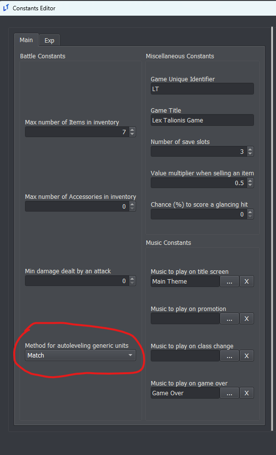

Difficulty Modes Editor
Explanation of Options
Permadeath
Casual: When a unit reaches 0 HP, they are removed from the map for the current chapter, but will be available next map.
Classic: When a unit reaches 0 HP, they die permanently.
Growth Method
All units have a specific growth rate for each of their stats. This growth rate determines the likelihood that the unit will gain a point in that stat on level-up. A growth rate greater than or equal to 100% guarantees a point on each level-up. A growth rate lower than 0% indicates a chance for the unit to lose points in that stat on level-up.
Random: Truly random growths. For each stat, a random number is rolled between 0 and 99. If the number is less than the growth rate, that stat increases.
Fixed: Units will always have their average stats. A unit with a 50% growth rate is guaranteed to get a stat increase every other level.
Dynamic: Like Random, but it applies a rubberbanding effect to the growth rate. If a unit fails to increase a stat on level-up, next level-up that stat will have a higher effective growth rate.
RNG Method
This determines how the engine decides whether an attack is a hit or a miss.
Classic: Used in FE1-5. No modifications. A 70% displayed chance to hit is exactly a 70% real chance to hit.
True Hit: Used in FE6-13. The engine generates two random numbers and averages them. This makes displayed chances to hit above 50% more likely than expected, and those lower than 50% less likely than expected. A 70% displayed chance to hit is actually 82.3%.
True Hit+: Like True Hit, but the engine generates three random numbers and averages them. A 70% displayed chance to hit is actually 88.2%.
Grandmaster: All attacks hit. However, the damage an attack deals is multiplied by the displayed chance to hit. An attack that deals 10 damage with a 70% displayed chance to hit will always hit, dealing 7 damage.
Difficulty Using “Test Current Chapter”
When testing a singular chapter via the “Test Current Chapter” option, the difficulty mode at the top of the list is automatically used. When testing with a “Player’s Choice” difficulty option, the default permadeath option is Casual, while the default growths option is Fixed.
Growth Mechanics
Stat Gain on Level Up
The Lex Talionis engine implements three different methods you can choose from for how your units will level up. You can find these options in the DifficultyEditor.
You can choose different growth methods for the player characters and the enemy characters. For instance, you could use the classic Random growth method for player characters, and then select Fixed for enemy characters to make their stats in battle more consistent.
The remaining fourth option, Match, is only available for non-player units and will force them to use whatever the player units use. This option is found in the Constants editor.

Random
This is the classic Fire Emblem experience. A unit with an X growth rate in a stat, will have exactly an X% chance to gain one point in that stat each time the unit levels up.
Additional Notes:
A unit with a 100 or greater growth rate in a stat will automatically gain at least one point in that stat. A unit with a 260 growth rate will automatically gain two points in that stat on level up, and then has a 60% chance to gain a third point in that stat.
A unit with a negative growth rate will have a chance of losing a point in that stat. From a -20 growth rate it follows that the unit will have a 20% chance to lose a point in that stat on level up.
If a stat is already at it’s maximum value, it will not increase any further. In the Lex Talionisengine, there is no re-roll on an empty level up like there is in the GBA games.
Fixed
All units will always have their average stats. A unit with an X growth rate in a stat will gain a stat point every 100/X levels. This keeps each stat as close as possible to its average value for that stat.
Additional Notes:
Units start with 50 “growth points” in each stat. On each level up, they gain their growths in that stat. So, a unit with a 25 growth rate will go from 50 starting growth points to 75 growth points at level 2.
If the new value would be greater than or equal to 100, the stat is increased by 1 and then their growth points in that stat are reduced by 100.
Example:
Growth Rate = 60
Level 1 Growth Points = 50
Level 2 Growth Points = 50 + 60 => 10 (Stat Increased!)
Level 3 Growth Points = 10 + 60 => 70
Level 4 Growth Points = 70 + 60 => 30 (Stat Increased!)
Level 5 Growth Points = 30 + 60 => 90
Level 6 Growth Points = 90 + 60 => 50 (Stat Increased!)
Level 7 Growth Points = 50 + 60 => 10 (Stat Increased!)
Level 8 Growth Points = 10 + 60 => 70
...
Dynamic
Unit’s growth rates will fluctuate to keep their stats close to the average value. The variance value used for this is 10. Otherwise, this method works identically to the Random method.
A unit with a X growth rate starts with a X% chance to level up their stat. The growth rate will be modified on each level up depending on whether their stat levels.
On success, growth rate is reduced by (100 - true_growth_rate) / variance.
*Repeated Successful Level Ups*
True Growth Rate = 60
Level 1 Growth Rate = 60
Level 2 Growth Rate = 60 - ((100 - 60) / 10) => 56
Level 3 Growth Rate = 56 - ((100 - 60) / 10) => 52
Level 4 Growth Rate = 52 - 4 => 48
...
On failure, growth rate is increased by true_growth_rate / variance.
*Repeated Failed Level Ups*
True Growth Rate = 60
Level 1 Growth Rate = 60
Level 2 Growth Rate = 60 + (60 / 10) => 66
Level 3 Growth Rate = 66 + (60 / 10) => 72
Level 4 Growth Rate = 72 + 6 => 78
Average Stats
All methods result in the unit having the same average stat as they level up. For instance, a level 1 unit that starts with a Speed stat of 5 and a speed growth of 40, under all three methods, will end up with, on average, a Speed stat of 13 at level 20. The only difference is how wide the variance on the results will be, with the Fixed method having no variance, and the Dynamic method have reduced variance compared to the Random method.